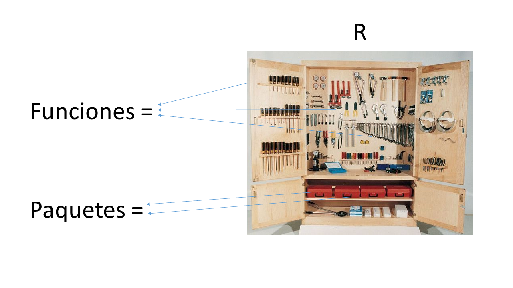
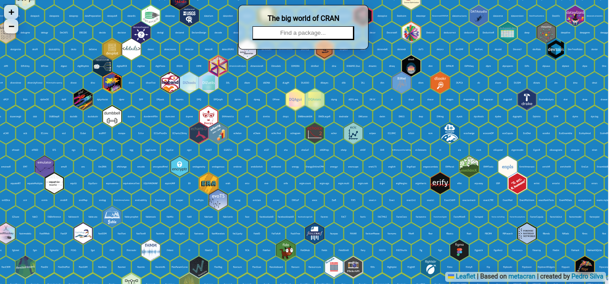
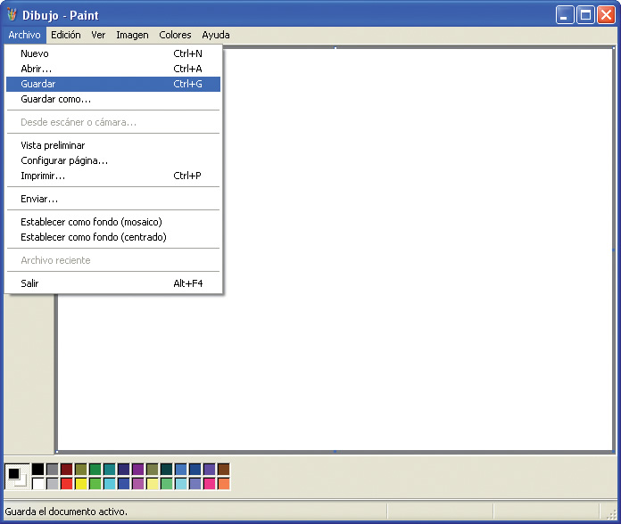
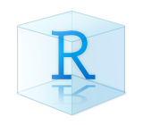
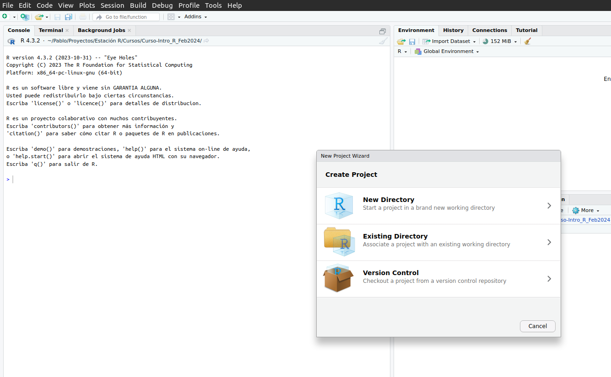
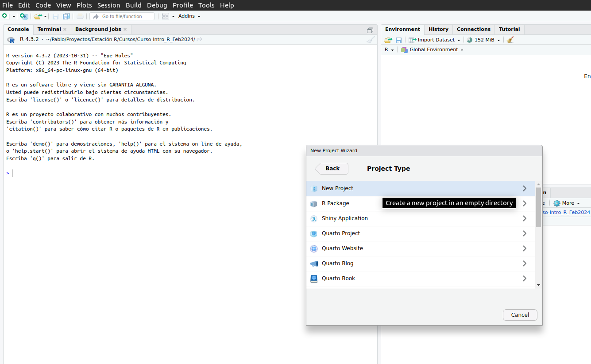
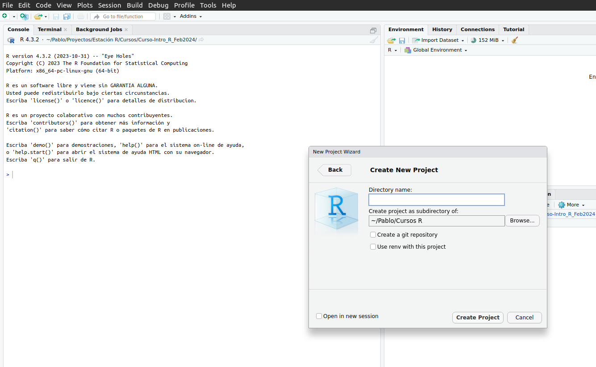
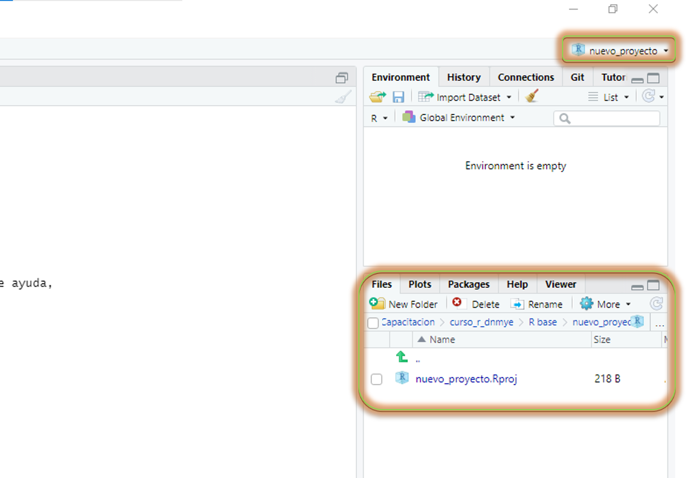

install.packages("readr")Proyectos de R, organizando la mesa de Trabajo
Buenas prácticas para organizar un proyecto de trabajo con datos
Bienvenidos y bienvenidas a Estación R
¿Qué vimos?
✅ Valores
✅ Vectores
✅ Data frames
✅ Objetos
✅ Funciones
Hoja de Ruta
📌 Paquetes
📌 Ruta de un archivo (o file path)
📌 Importar nuestra primera base de datos
📌 Armar un proyecto de trabajo en Rstudio (R project)
📌 Estructura de carpeta
👉🏼 Cómo estructurar la carpeta de trabajo
👉🏼 Cómo nombrar archivosPaquetes
Paquetes

Paquetes
Los paquetes o librerías son la potencia de los lenguajes como R y Python
Es cómo las comunidades pueden hacer crecer al lenguaje

Paquetes
Se instala (una vez por computadora)
install.packages("nombre_del_paquete")Se convoca (por cada sesión de R)
library(nombre_del_paquete)Paquetes
Para instalar un paquete (
install.packages()), el nombre del paquete va siempre entre comillas
Paquetes
Para instalar un paquete (
install.packages()), el nombre del paquete va siempre entre comillas
install.packages("readr")Para convocar un paquete (
library()) el nombre puede o no llevar comillas (se recomienda sin)
library(readr)Paquetes
- Instalemos nuestro primer paquete:
install.packages("readr")Paquetes
- Instalemos nuestro primer paquete:
install.packages("readr")- ¿Mucha letra roja?
Paquetes
- Convoquemos al paquete
library(readr)
Ruta de archivos
Definición: Ubicación de una carpeta / archivo en mi computadora
Máxima: Todas las carpetas en nuestra computadora tienen una ruta
Ruta de archivos
- Ejemplo diario de seleccionar una ruta de archivo:

{width: “70%”;}Importar datos
Vamos a descargar una base de datos y ubicarla en una carpeta conocida de mi computadora.
Base de datos: Nombre de Personas. Argentina, año 2015.
Importar datos
- Vamos a descargar una base de datos y ubicarla en una carpeta conocida de mi computadora.
- Base de datos: Nombre de Personas. Argentina, año 2015.
- Tip: Reconocer la extensión del archivo a descargar (.csv, .txt, .sav, .dta, .sas, etc.)
Importar datos
- Manos a la obra:
library(readr)
read_csv(file = "/home/pablote/Documentos/datos/nombres-2015.csv")Importar datos
- Falta algo…
Importar datos
- Falta algo…
base_personas <- read_csv(file = "/home/pablote/Documentos/datos/nombres-2015.csv")Descanso
10:00 Proyectos de trabajo

Proyectos de trabajo
- Copiar la siguiente sentencia en tu consola o script y ejecutar:
base_personas <- read_csv(file = "/home/pablote/Documentos/datos/nombres-2015.csv")Proyectos de trabajo
Si compartimos el script a otra persona, el código se rompe
Si cambiamos de computadora, el código se rompe
Si cambiamos la base de lugar, el código se rompe
La solución

Crear un proyecto de Rstudio
- Paso 1:
–> File (archivo) –> New Project (Nuevo Proyecto…)

Crear un proyecto de Rstudio
- Paso 2:
–> New Directory (Nueva carpeta)

Crear un proyecto de Rstudio
- Paso 3:
–> New Project

Crear un proyecto de Rstudio
- Resultado:

Manos a la obra
Crear un proyecto de Rstudio
- Asegurarse que estamos en el proyecto, de lo contrario, abrirlo
Crear un proyecto de Rstudio
Asegurarse esta en el proyecto, de lo contrario, abrirlo ✅
Crear una carpeta nueva llamada
datos
Crear un proyecto de Rstudio
Asegurarse esta en el proyecto, de lo contrario, abrirlo ✅
Crear una carpeta nueva llamada
datos✅Guardar la base de personas en la carpeta
datos
Crear un proyecto de Rstudio
Asegurarse esta en el proyecto, de lo contrario, abrirlo ✅
Crear una carpeta nueva llamada
datos✅Guardar la base de personas en la carpeta
datos✅Ejecutar la siguiente sentencia:
library(readr)
base_personas <- read_csv("datos/nombres-2015.csv")Crear un proyecto de Rstudio
- Antes (sin un proyecto)
base_personas <- read_csv(file = "/home/pablote/Documentos/datos/nombres-2015.csv")Crear un proyecto de Rstudio
- Antes (sin un proyecto)
base_personas <- read_csv(file = "/home/pablote/Documentos/datos/nombres-2015.csv")- Después (con un proyecto)
base_personas <- read_csv("datos/nombres-2015.csv")Estructura de carpetas
📂 nuevo_proyecto
nuevo_proyecto.Rproj
📂 datos
- ⛁ nombres-2015.csv
📂 outputs
📂 scripts
- 📄 1_levantar_datos.R
📂 docs_metodologicos
- 📚 bibliografia.docx